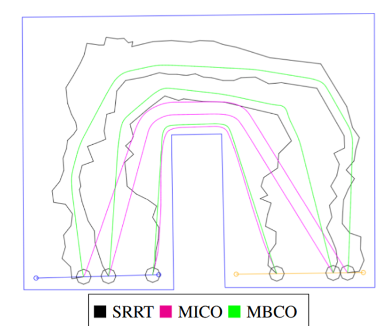
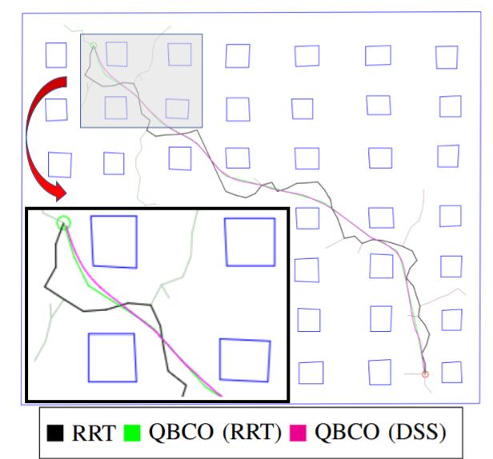
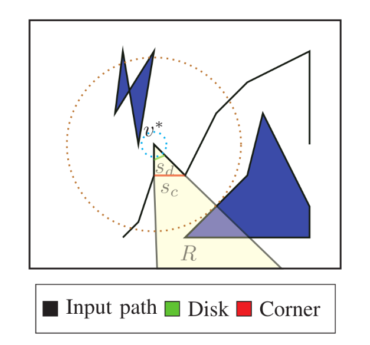
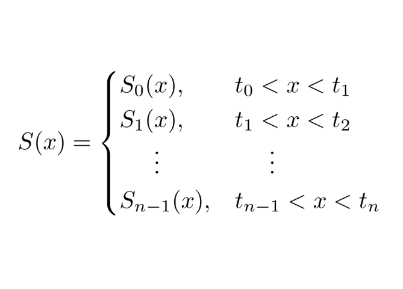
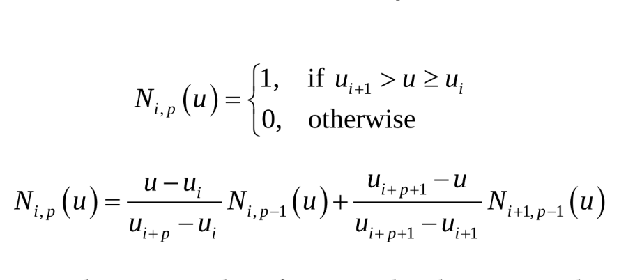
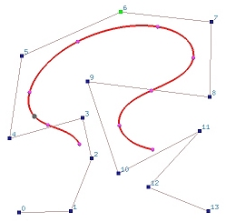

Publications
2026
-
Accepted Samriddhi Matharu, Maryam Khazaei. “A Data-Driven Analysis of Traffic Patterns in Downtown San Jose, California.” IEEE 13th Conference on Technologies for Sustainability, USA, 2026.
2025
-
Published Amith Kamath Belman, Maryam Khazaei, Melody Moh. “Adopting AI in Computing-Based Interdisciplinary Curricula for Workforce Readiness.” IEEE 5th Cyber Awareness and Research Symposium (CARS), USA, 2025.
-
Published Maryam Khazaei, Chirag Rudresh. Multi-Agent Path Planning and Optimization using Q-learning” IEEE 8th International Conference on Intelligent Robotics and Control Engineering, 2025.
-

Published Maryam Khazaei, Matthew Morozov, Marcelo Kallmann. , Multi-Agent Lane Optimization in Cluttered Environments. ” IEEE Mechatronics & Robotics Engineering, France, 2025.
2023
-

Published Maryam Khazaei, Matthew Morozov, Marcelo Kallmann. “ Optimizing Curvature and Clearance of Piecewise Bézier Paths.” IEEE International Conference on Control, Mechatronics and Automation (ICCMA), 2023.
2022
-

Published Maryam Khazaei, Carlos Diaz Alvarenga, Marcelo Kallmann. “ Path Smoothing with Deterministic Shortcuts.” 2022 Sixth IEEE International Conference on Robotic Computing (IRC), December 2022. -
Published Maryam Khazaei, Carlos Diaz Alvarenga, Marcelo Kallmann. “Deterministic Path Optimization in 2D.” 2022 IEEE 18th International Conference on Automation Science and Engineering, May 2022.
-

Published Maryam Khazaei, Lori Lewis. “A Review on Higher-Order Spline Techniques for Solving Burgers Equation Using Variation of B-Spline Techniques.” Advances in Applied and Engineering Mathematics Conference, August 2022.
2021
-

Published Maryam Khazaei, Yeganeh Karamipour. “Numerical Solution of the Seventh Order Boundary Value Problems Using B-Spline Method.” Journal of Applied Mathematics and Physics, December 2021.
2015
-

Published Maryam Khazaei, Jalil Rashidinia, Hassan Nikmarvani. “Spline Collocation Method for Solution of Higher Order Linear Boundary Value Problems.” TWMS Journal of Pure and Applied Mathematics, V.6, N.1, 2015, pp.38–47.